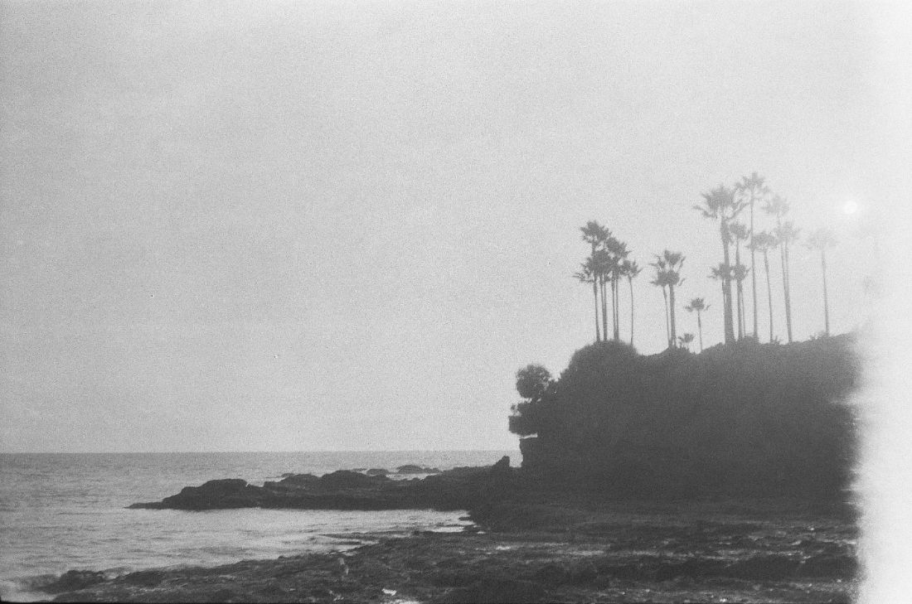
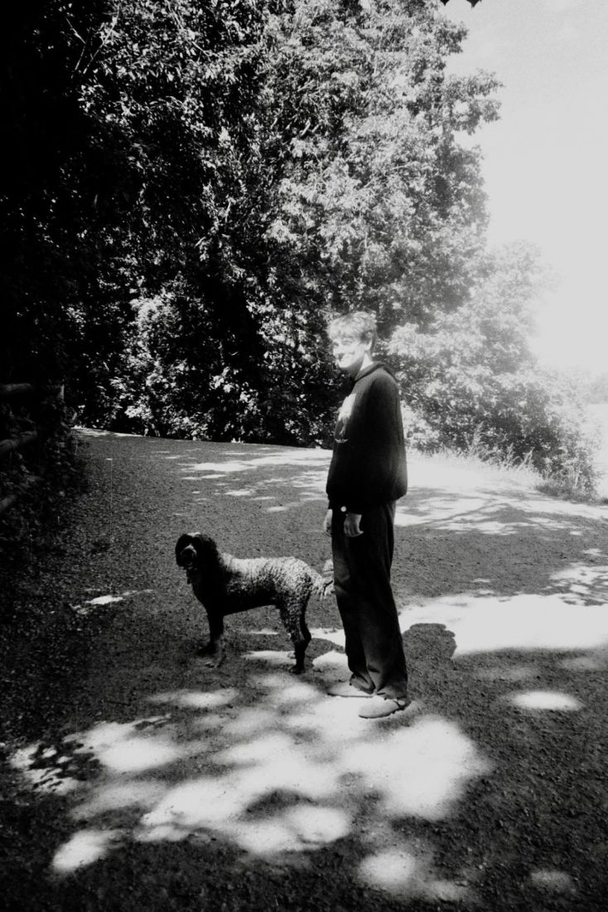
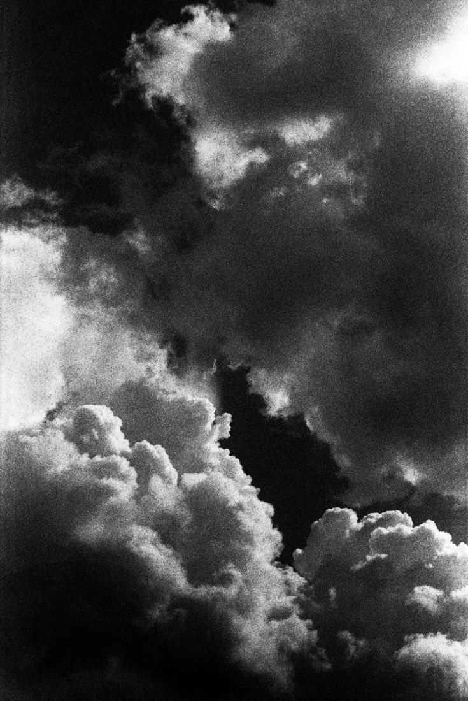
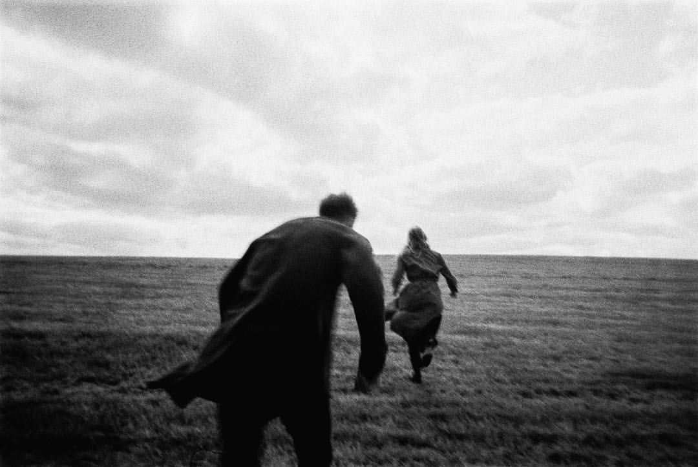
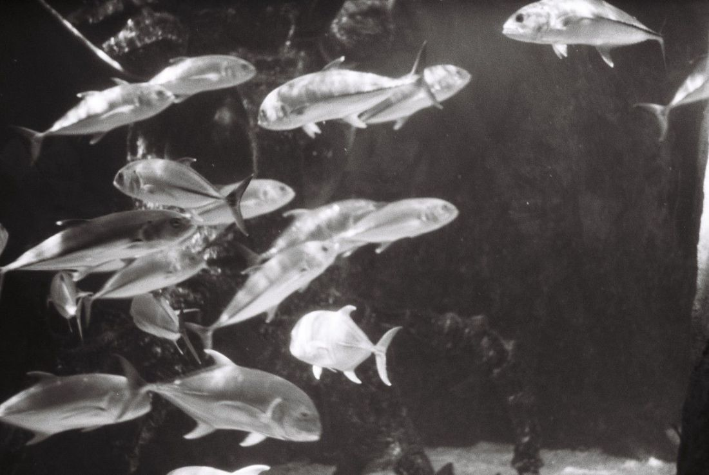

35mm 스캔 표본





필름
- 종류
- 흑백 네거티브
- 감도
- ISO 400
- 현상 방식
- C-41 컬러 네거티브
- 규격
- 35mm
- 현상 조건
- 37.8℃ 발색 현상 3분 15초
- 노출 관용도
- −2 ~ +3스톱
- 증감 현상
- 권하지 않음
- 입자
- 고움
가격 · 작업 일수
| 항목 | 35mm | 일수 |
|---|---|---|
| 현상만 | 5,000원 | 2영업일 |
| 현상 + 표준 스캔 | 9,000원2048×3072 | 2영업일 |
| 현상 + 고해상 스캔 | 12,000원3089×4630 | 2영업일 |
| 현상 + 최대 스캔 | 16,000원4492×6774 | 3영업일 |
롤 하나 기준이에요. 증감 현상은 롤당 2,000원을 더해요.